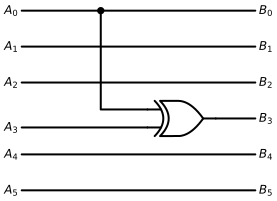
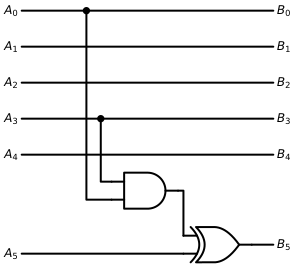
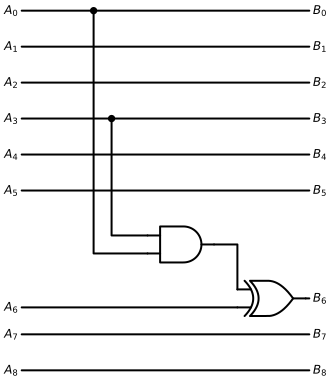

Gates like the Hadamard gate and the T gate, are fundamentally more complex. Geometrically, they rotate the state to points that lie between the vertices—on the faces or edges of the Bloch sphere. They cannot be implemented by a simple one-to-one permutation of discrete vertices.
The Pauli gates (\(X, Y, Z\)) and the phase gate (\(S\)) were straightforward because every vertex of our 8-state cube mapped cleanly and deterministically onto another single vertex.
Gates like the Hadamard gate (\(H\)) and the \(T\) gate (\(\pi/8\) rotation), however, are fundamentally more complex. Geometrically, they rotate the state to points that lie between the vertices—on the faces or edges of the Bloch sphere. They cannot be implemented by a simple one-to-one permutation of discrete vertices.
The Hadamard Gate
The Hadamard gate is the quintessential quantum superposition operator. In the standard Dirac computational basis, it maps basis states into equal linear combinations:
Notice a remarkable mathematical symmetry: the Hadamard matrix can be decomposed exactly as the normalized sum of the \(X\) and \(Z\) Pauli operators:
\[H = \frac{1}{\sqrt{2}} (X + Z)\]
This identity provides our architectural blueprint!
We can synthesize the Hadamard transformation by:
1. Routing our input protobit triplet \((A_0, A_1, A_2)\) into both the \(X\) circuit and the \(Z\) circuit in parallel.
2. Superposing the output channel selection using a fair-coin random source to balance the branches with equal probability weights.
By leveraging physical resonance and stochastic mixing, the discrete geometry of protobits natively recreates the continuous superposition of the Hadamard transform.
Don’t forget that the boolean logic gates depicted below operate as native quantum transition operators capable of manipulating coherent protobit states.
Additionally, the Random signal is entirely internal to the gate’s molecular framework—acting as a local stochastic fluctuation rather than an external control line—so there is no need to route it from outside the cell.
Code
# Initialize schematic drawing for the Hadamard circuitwith schemdraw.Drawing() as d: d.config(fontsize=12, unit=2.5)# Vertical coordinates for the rails y_rand =4.5 y_a0 =3.0 y_a1 =1.5 y_a2 =0.0 x_in =0.0# ==========================================# 1. Logic Gates Setup# ==========================================# AND gate: inputs from Random and A0 and_gate = d.add(logic.And().right().at((3.0, 3.25)))# XOR gate: inputs from AND output and A2 -> drives B2 xor_gate = d.add(logic.Xor().right().at((5.0, y_a2 +0.25)))# ==========================================# 2. Random Source Line -> Drives B0 and AND gate# ========================================== d.add( elm.Line() .right(6.0) .at((x_in +2, y_rand)) .label("Random", loc="left") .label("$B_0$", loc="right") )# Branch down to AND gate input 1 d.add(elm.Dot().at((2.5, y_rand))) d.add(elm.Wire("|-").at((2.5, y_rand)).to(and_gate.in1))# ==========================================# 3. Input A0 Line -> Drives AND gate input 0# ========================================== d.add( elm.Line() .at((x_in, y_a0)) .to(and_gate.in2) .label("$A_0$", loc="left") )# ==========================================# 4. Input A1 Line -> Direct straight wire to B1 (Identity)# ========================================== d.add( elm.Line() .right(8.0) .at((x_in, y_a1)) .label("$A_1$", loc="left") .label("$B_1$", loc="right") )# ==========================================# 5. Input A2 Line -> XOR with AND output -> Drives B2# ==========================================# Straight input wire to XOR bottom input d.add( elm.Line() .at((x_in, y_a2)) .to(xor_gate.in2) .label("$A_2$", loc="left") )# Route AND gate output down into XOR top input d.add(elm.Wire("-|").at(and_gate.out).to(xor_gate.in1))# Output line B2 d.add( elm.Line() .right(1.0) .at(xor_gate.out) .label("$B_2$", loc="right") )
The \(T\) gate is a fundamental non-Clifford phase rotation. In standard quantum computing, the \(T\) gate is famous because adding it to the Clifford group (\(\{H, S, \text{CNOT}\}\)) makes a quantum computer universally complete for any arbitrary quantum algorithm.
In the computational basis, it applies a \(\pi/4\) (\(45^\circ\)) phase shift to \(|1\rangle\) while leaving \(|0\rangle\) untouched:
\[\begin{aligned}
T |0\rangle &= |0\rangle \\
T |1\rangle &= e^{i\pi/4} |1\rangle = \frac{1}{\sqrt{2}} (|1\rangle + i|1\rangle)
\end{aligned}\]
For the \(T\) gate, the operational principle is identical to that of the Hadamard gate, with an elegant asymmetry:
The \(|0\rangle\) manifold (\(A_2 = 0\)): Exactly half of the cube vertices map deterministically onto another vertex without any phase splitting.
The \(|1\rangle\) manifold (\(A_2 = 1\)): The remaining half of the vertices map into an equal superposition between real and imaginary phase axes (\(\frac{1}{\sqrt{2}} (1 + i)\)).
Just as we did for the Hadamard circuit, we can employ our balanced Random protobit source to govern the superposed states—except here, the stochastic splitting is applied conditionally.
# Initialize schematic drawing for the quantum T gatewith schemdraw.Drawing() as d: d.config(fontsize=12, unit=2.5)# Vertical coordinates for the input/output rails y_rand =5.0 y_a0 =3.5 y_a1 =2.0 y_a2 =0.5 x_in =0.0# ==========================================# 1. Place Logic Gates# ==========================================# First stage: AND gate for conditional imaginary phase toggle# Inputs: A0 and Random and_phase = d.add(logic.And().right().at((3.0, 2.8)))# XOR gate for B1 = A1 XOR (A0 AND Random) xor_b1 = d.add(logic.Xor().right().at((6.0, y_a1 +0.25)))# Second stage: AND gate for sign flip when rotating from +i to -1# Inputs: (A0 AND Random) output and A1 and_sign = d.add(logic.And().right().at((5.5, 0.6)))# XOR gate for B2 = A2 XOR (Sign toggle) xor_b2 = d.add(logic.Xor().right().at((8.5, y_a2 -1)))# ==========================================# 2. Wire Random Input Line# ========================================== d.add( elm.Line() .right(0.5) .at((x_in +1.5, y_rand)) .label("Random", loc="left") )# Drop down into top input of and_phase d.add(elm.Wire("|-").to(and_phase.in1))# ==========================================# 3. Wire A0 Line (Presence / Control line)# ========================================== d.add( elm.Line() .right(10.5) .at((x_in, y_a0)) .label("$A_0$", loc="left") .label("$B_0$", loc="right") )# Tap A0 down into bottom input of and_phase d.add(elm.Dot().at((1.5, y_a0))) d.add(elm.Wire("|-").at((1.5, y_a0)).to(and_phase.in2))# ==========================================# 4. Wire A1 Line (Imaginary Phase bit)# ==========================================# From input to xor_b1 bottom input d.add( elm.Line() .right(2.0) .at((x_in, y_a1)) .label("$A_1$", loc="left") ) d.add(elm.Dot().at((2.0, y_a1)))# Tap A1 down into bottom input of and_sign d.add(elm.Wire("|-").at((2.0, y_a1)).to(and_sign.in2))# Main A1 path to xor_b1 d.add(elm.Wire("-|").at((2.0, y_a1)).to(xor_b1.in2))# Route and_phase output to xor_b1 top input and tap to and_sign top input d.add(elm.Wire("-|").at(and_phase.out).to(xor_b1.in1)) d.add(elm.Dot().at((5.0, and_phase.out[1]))) d.add(elm.Wire("|-").at((5.0, and_phase.out[1])).to(and_sign.in1))# Output line B1 d.add( elm.Line() .right(3.5) .at(xor_b1.out) .label("$B_1$", loc="right") )# ==========================================# 5. Wire A2 Line (Sign Phase bit)# ==========================================# Direct line from A2 input into bottom pin of xor_b2 d.add( elm.Line() .at((x_in, y_a2 -1.25)) .to(xor_b2.in2) .label("$A_2$", loc="left") )# Route and_sign output into top pin of xor_b2 d.add(elm.Wire("-|").at(and_sign.out).to(xor_b2.in1))# Output line B2 d.add( elm.Line() .right(1.5) .at(xor_b2.out) .label("$B_2$", loc="right") )
In conventional quantum hardware, multi-qubit entangling gates are notoriously difficult to implement—they suffer from high error rates, crosstalk, and delicate laser/microwave tuning.
In our molecular protobit architecture, the situation is completely reversed: multi-qubit gates (SWAP, CNOT, CZ, and Toffoli) are often structurally simpler to build than single-qubit rotation gates.
Because the channels are already organized into discrete protobit buses, multi-qubit control reduces fundamentally to boolean routing, multiplexing, and conditional masking.
The SWAP Gate
The SWAP gate exchanges the quantum states of two qubits. In our architecture, no active logic gates are required at all: we simply cross the physical protobit lines.
In standard Dirac notation: \[\text{SWAP} |a, b\rangle = |b, a\rangle\]
In the 3-protobit representation, swapping two qubits \((A_0 A_1 A_2)\) and \((A_3 A_4 A_5)\) is achieved by routing the two 3-line buses across each other. It is a zero-gate, purely geometric operation.
In hardware, conditioning an operation on a control qubit is achieved by multiplexing.
Because the target operation is a bit-flip (our single-qubit Pauli-\(X\) gate, which simply inverts the target’s presence bit \(A_3\)), the control condition simplifies directly:
* The control presence bit (\(A_0\)) and the target presence bit (\(A_3\)) are fed into a single XOR gate (\(B_3 = A_0 \oplus A_3\)).
* The phase lines pass through unaffected.
A single XOR gate fully realizes quantum entanglement between two qubits!
Code
with schemdraw.Drawing() as d: d.config(fontsize=12, unit=1.5)# In/Out horizontal coordinates x_in =0.0 x_xor =3.5 x_out =6.5# Vertical coordinates: A0 at the top (y=5.0) down to A5 at the bottom (y=0.0) y_a0 =5.0# Control presence y_a1 =4.0 y_a2 =3.0 y_a3 =2.0# Target presence y_a4 =1.0 y_a5 =0.0# ==========================================# 1. Place the single XOR Gate on Target Line A3# ==========================================# The XOR gate is centered on y_a3 (y=2.0) xor_gate = d.add(logic.Xor().right().at((x_xor, y_a3)))# ==========================================# 2. Control Qubit Wires (A0, A1, A2)# ==========================================# A0 Line: straight from in to out, with a tap down to XOR gate d.add( elm.Line() .at((x_in, y_a0)) .to((x_out, y_a0)) .label("$A_0$", loc="left") .label("$B_0$", loc="right") )# Tap on line A0 going down to the top input of the XOR gate d.add(elm.Dot().at((2.2, y_a0))) d.add(elm.Wire("|-").at((2.2, y_a0)).to(xor_gate.in1))# A1 Line (straight identity) d.add( elm.Line() .at((x_in, y_a1)) .to((x_out, y_a1)) .label("$A_1$", loc="left") .label("$B_1$", loc="right") )# A2 Line (straight identity) d.add( elm.Line() .at((x_in, y_a2)) .to((x_out, y_a2)) .label("$A_2$", loc="left") .label("$B_2$", loc="right") )# ==========================================# 3. Target Qubit Wires (A3, A4, A5)# ==========================================# A3 Input line into XOR gate bottom input d.add( elm.Line() .at((x_in, y_a3 -0.25)) .to(xor_gate.in2) .label("$A_3$", loc="left") )# Output from XOR gate to B3 d.add( elm.Line() .at(xor_gate.out) .to((x_out, y_a3)) .label("$B_3$", loc="right") )# A4 Line (straight identity) d.add( elm.Line() .at((x_in, y_a4)) .to((x_out, y_a4)) .label("$A_4$", loc="left") .label("$B_4$", loc="right") )# A5 Line (straight identity) d.add( elm.Line() .at((x_in, y_a5)) .to((x_out, y_a5)) .label("$A_5$", loc="left") .label("$B_5$", loc="right") )

The CZ Gate (Controlled-Z)
The Controlled-Z gate flips the sign phase of the state \(|11\rangle\) while leaving all other basis states untouched. Due to quantum symmetry, either qubit can act as the control or the target:
In our framework, the Pauli-\(Z\) gate is an inversion of the sign bit (\(A_5\)). Conditioning this phase-flip on the co-presence of both qubits being in state \(|1\rangle\) is remarkably simple:
1. An AND gate detects the joint condition: \(A_0 \land A_3 = 1\).
2. The output feeds into a XOR gate on the target’s sign bit: \(B_5 = A_5 \oplus (A_0 \land A_3)\).
Code
with schemdraw.Drawing() as d: d.config(fontsize=12, unit=1.5)# In/Out horizontal coordinates x_in =0.0 x_and =2.5 x_xor =4.5 x_out =7.0# Vertical coordinates: A0 at the top (y=5.0) down to A5 at the bottom (y=0.0) y_a0 =5.0# Control presence y_a1 =4.0 y_a2 =3.0 y_a3 =2.0# Target presence y_a4 =1.0 y_a5 =0.0# Target sign bit# ==========================================# 1. Logic Gates Placement# ==========================================# AND gate detects co-presence (A0 AND A3), placed midway between them and_gate = d.add(logic.And().right().at((x_and, 0.)))# XOR gate on target sign line A5 (y=0.0) xor_gate = d.add(logic.Xor().right().at((x_xor, y_a5 -1.5)))# ==========================================# 2. Control Qubit Wires (A0, A1, A2)# ==========================================# A0 Line (straight through, tapped down into AND gate) d.add( elm.Line() .at((x_in, y_a0)) .to((x_out, y_a0)) .label("$A_0$", loc="left") .label("$B_0$", loc="right") ) d.add(elm.Dot().at((1.8, y_a0))) d.add(elm.Wire("|-").at((1.8, y_a0)).to(and_gate.in2))# A1 Line (straight identity) d.add( elm.Line() .at((x_in, y_a1)) .to((x_out, y_a1)) .label("$A_1$", loc="left") .label("$B_1$", loc="right") )# A2 Line (straight identity) d.add( elm.Line() .at((x_in, y_a2)) .to((x_out, y_a2)) .label("$A_2$", loc="left") .label("$B_2$", loc="right") )# ==========================================# 3. Target Qubit Wires (A3, A4, A5)# ==========================================# A3 Line (straight through, tapped up into AND gate) d.add( elm.Line() .at((x_in, y_a3)) .to((x_out, y_a3)) .label("$A_3$", loc="left") .label("$B_3$", loc="right") ) d.add(elm.Dot().at((2.2, y_a3))) d.add(elm.Wire("|-").at((2.2, y_a3)).to(and_gate.in1))# A4 Line (straight identity) d.add( elm.Line() .at((x_in, y_a4)) .to((x_out, y_a4)) .label("$A_4$", loc="left") .label("$B_4$", loc="right") )# A5 Line: enters XOR bottom input, XOR output goes to B5 d.add( elm.Line() .at((x_in, y_a5 -1.75)) .to(xor_gate.in2) .label("$A_5$", loc="left") ) d.add( elm.Line() .at(xor_gate.out) .to((x_out, y_a5 -1.5)) .label("$B_5$", loc="right") )# Route AND gate output down into the top input of the XOR gate d.add(elm.Wire("-|").at(and_gate.out).to(xor_gate.in1))

The Toffoli Gate (CCNOT / Controlled-Controlled-NOT)
The Toffoli gate is the universal 3-qubit reversible gate: it flips the target qubit if and only if both control qubits are in state \(|1\rangle\).
In standard quantum computing, compiling a single Toffoli gate requires at least 6 CNOT gates and several \(T\) gates, creating a massive decoherence bottleneck.
In our protobit architecture, expanding the control condition requires no quantum compilation overhead whatsoever:
* We simply cascade an extra AND gate to verify the second control line (\(A_0 \land A_3\)), followed by our standard target XOR gate (\(B_6 = A_6 \oplus (A_0 \land A_3)\)).
Code
with schemdraw.Drawing() as d: d.config(fontsize=12, unit=1.5)# In/Out horizontal coordinates x_in =0.0 x_and =3.5 x_xor =6.0 x_out =8.0# Vertical coordinates: 9 lines (y=8.0 down to y=0.0)# Control 1: A0 (presence), A1, A2# Control 2: A3 (presence), A4, A5# Target: A6 (presence), A7, A8 y = [float(8- i) for i inrange(9)] y[6] -=2 y[7] -=2 y[8] -=2# ==========================================# 1. Place Logic Gates# ==========================================# AND gate placed between A0 and A3 (y=6.5) and_gate = d.add(logic.And().right().at((x_and, 1.5)))# XOR gate placed directly on target presence line A6 (y=2.0) xor_gate = d.add(logic.Xor().right().at((x_xor, y[6])))# ==========================================# 2. Control Qubit 1 (A0, A1, A2)# ==========================================# Line A0 (tapped down to AND gate) d.add( elm.Line() .at((x_in, y[0])) .to((x_out, y[0])) .label("$A_0$", loc="left") .label("$B_0$", loc="right") ) d.add(elm.Dot().at((2.0, y[0]))) d.add(elm.Wire("|-").at((2.0, y[0])).to(and_gate.in2))# Lines A1 and A2 (straight identity)for i in [1, 2]: d.add( elm.Line() .at((x_in, y[i])) .to((x_out, y[i])) .label(f"$A_{i}$", loc="left") .label(f"$B_{i}$", loc="right") )# ==========================================# 3. Control Qubit 2 (A3, A4, A5)# ==========================================# Line A3 (tapped up to AND gate) d.add( elm.Line() .at((x_in, y[3])) .to((x_out, y[3])) .label("$A_3$", loc="left") .label("$B_3$", loc="right") ) d.add(elm.Dot().at((2.5, y[3]))) d.add(elm.Wire("|-").at((2.5, y[3])).to(and_gate.in1))# Lines A4 and A5 (straight identity)for i in [4, 5]: d.add( elm.Line() .at((x_in, y[i])) .to((x_out, y[i])) .label(f"$A_{i}$", loc="left") .label(f"$B_{i}$", loc="right") )# ==========================================# 4. Target Qubit (A6, A7, A8)# ==========================================# Line A6 (Presence bit passes through XOR gate) d.add( elm.Line() .at((x_in, y[6] -0.25)) .to(xor_gate.in2) .label("$A_6$", loc="left") ) d.add( elm.Line() .at(xor_gate.out) .to((x_out, y[6])) .label("$B_6$", loc="right") )# Route AND gate output down to the XOR gate top input d.add(elm.Wire("-|").at(and_gate.out).to(xor_gate.in1))# Lines A7 and A8 (straight identity)for i in [7, 8]: d.add( elm.Line() .at((x_in, y[i])) .to((x_out, y[i])) .label(f"$A_{i}$", loc="left") .label(f"$B_{i}$", loc="right") )

Square-Root Logic Gates
Fractional quantum gates—operations that perform half of a classical rotation, such as the Square Root of SWAP (\(\sqrt{\text{SWAP}}\)) or Square Root of NOT (\(\sqrt{X}\))—might sound exotic.
Within our discrete geometric framework, however, the exact same design methodology applies systematically:
1. Map the 8-state cube vertices across the inputs.
2. For transitions that do not land squarely on a single basis vertex, decompose the fractional rotation into an equal superposition of adjacent cardinal vertices.
3. Construct the corresponding boolean multiplexing circuit, using the internal Random protobit signal to balance the superposed branches.
The Square Root of SWAP Gate (\(\sqrt{\text{SWAP}}\))
In quantum computing (particularly in quantum dot and spintronic architectures), the \(\sqrt{\text{SWAP}}\) gate is exceptionally important: applying it twice performs a full swap (\((\sqrt{\text{SWAP}})^2 = \text{SWAP}\)), but applying it once generates maximal quantum entanglement between two qubits.
In the standard computational basis \(\{|00\rangle, |01\rangle, |10\rangle, |11\rangle\}\), its unitary matrix is:
Notice its operational behavior:
* The identical states \(|00\rangle\) and \(|11\rangle\) remain completely unchanged (pure identity mapping).
* The anti-parallel states \(|01\rangle\) and \(|10\rangle\) are transformed into an equal, entangled superposition of each other with a relative \(90^\circ\) phase shift:
In our dual 3-protobit architecture (\(A_0 A_1 A_2\) and \(A_3 A_4 A_5\)):
Detection: An exclusive condition (\(A_0 \oplus A_3 = 1\)) identifies when the two qubits differ in presence (\(|01\rangle\) or \(|10\rangle\)).
Conditional Mixing: When this condition is met, our Random stochastic source triggers an equal superposition switch between crossing the lines (\(A \leftrightarrow B\)) and leaving them straight (\(A \rightarrow A, B \rightarrow B\)).
Phase Imprinting: The complex coefficients \(\frac{1 \pm i}{2}\) correspond directly to our \(T\)-gate phase logic, shifting the imaginary protobits (\(A_1, B_1\)) and sign protobits (\(A_0, B_0\)) into relative quadrature.
What is ordinarily treated as an elusive continuous quantum interaction is thus realized as a conditional, stochastic half-crossing circuit built from elementary boolean gates.
At present, the most straightforward and pragmatic method to read out a continuous qubit encoded across a 3-protobit channel is statistical sampling (also known as quantum state tomography via shot repetition).
Because our 3-protobit system defines a discrete probability distribution over 8 physical basis states (\(\mathbf{P} \in [0, 1]^8\)), a single physical readout cannot reveal the full continuous wavefunction all at once. A single measurement simply collapses the three carbon bonds into one concrete binary triplet (e.g., observing "100" with probability \(p_4\)).
To reconstruct the continuous qubit:
1. Repeated Executions (Shots): The computational circuit is executed repeatedly under identical boundary conditions (e.g., \(N = 1000\) or \(10\,000\) shots), or read out simultaneously across an ensemble of identical, parallel molecules.
2. Frequency Histogram: We count the number of times each of the 8 configurations appears (\(N_0, N_1, \dots, N_7\)).
3. Probability Estimation: Each protobit channel is estimated by its empirical frequency: \[p_k \approx \frac{N_k}{N}\]
Once this 8-channel stochastic vector \(\mathbf{P} = \begin{bmatrix} p_0 & p_1 & \dots & p_7 \end{bmatrix}\) is reconstructed from the samples, it is fed directly into the algebraic decoder detailed below to restore the continuous Dirac state \(|\psi\rangle\).
Admittedly, statistical sampling is computationally demanding—it inherits the standard \(\mathcal{O}(1/\sqrt{N})\) shot-noise scaling of classical estimation.
More direct, single-shot physical readout mechanisms remain an open and active frontier of ongoing research.
Reconstructing a Continuous Qubit from the 3-Protobit State Vector
Now, let us reverse the mapping: given a normalized \(1 \times 8\) protobit transition matrix \(\mathbf{P} = \begin{bmatrix} p_0 & p_1 & p_2 & p_3 & p_4 & p_5 & p_6 & p_7 \end{bmatrix}\), how do we algebraically reconstruct the continuous quantum qubit state?
In Dirac notation, a general single-qubit ket \(|\psi\rangle\) is expressed as a column vector in the computational basis \(\{|0\rangle, |1\rangle\}\):
The algebraic reconstruction operates across three direct steps:
Step 1: Recovering Signed Amplitudes by Difference
Recall that each real and imaginary axis was split across two mutually exclusive channels: one for the positive magnitude and one for the negative magnitude.
We recover the signed scalar components directly by taking the net difference between adjacent protobit channels:
For the \(|0\rangle\) Component (\(c_0\)):
Real part: \[d_0 = p_0 - p_1\]
Imaginary part: \[d_1 = p_2 - p_3\]
For the \(|1\rangle\) Component (\(c_1\)):
Real part: \[d_2 = p_4 - p_5\]
Imaginary part: \[d_3 = p_6 - p_7\]
Step 2: Quantum Normalization (\(\gamma\))
Because a physical quantum state must obey the unit norm constraint (\(\langle\psi|\psi\rangle = |c_0|^2 + |c_1|^2 = 1\)), we compute the Euclidean scaling factor \(\gamma\):
\[\gamma = \sqrt{d_0^2 + d_1^2 + d_2^2 + d_3^2}\]
Provided the state represents a valid, non-zero physical distribution (\(\gamma > 0\)), this scalar rescales the components back onto the surface of the Bloch sphere.
Step 3: The Recovered Dirac State Vector
Combining the signed components and applying the normalization factor \(\gamma\) yields the complete quantum state in canonical Dirac form:
\[|\psi\rangle = c_0 |0\rangle + c_1 |1\rangle\]
where:
\[c_0 = \frac{d_0 + i \, d_1}{\gamma} = \frac{(p_0 - p_1) + i \, (p_2 - p_3)}{\gamma}\]
\[c_1 = \frac{d_2 + i \, d_3}{\gamma} = \frac{(p_4 - p_5) + i \, (p_6 - p_7)}{\gamma}\]
This mapping provides an exact, lossless bridge: any 8-channel protobit state vector collapses seamlessly back into its continuous complex Dirac counterpart \(|\psi\rangle\).
Classical Examples
Quantum phase kickback.
Quantum Fourier transform.
Speculations & Wild Thoughts
Beyond Statistical Sampling: Can We Do Better?
Reconstructing continuous qubit amplitudes by statistically sampling over millions of discrete 3-protobit observations feels like an engineering concession. It mimics the clumsy “shots” measurement bottleneck of classical quantum simulators.
In a real, physical molecule, \(\pi\)-electrons do not roll dice to calculate their ground state—they settle via continuous, collective wave relaxation. There must be a more native, analog readout mechanism that bypasses statistical sampling altogether.
The 4-vertex tetrahedral POVM of QBism remains conceptually tantalizing:
* It requires only 2 protobits instead of 3.
* The probability conservation (\(\sum p_k = 1.0\)) emerges naturally and symmetrically from the geometry, without requiring separate longitudinal and transverse partitioning.
The catch? The operator matrices.
When you translate continuous quantum gates (like Hadamard or Phase rotations) into the tetrahedral basis, the resulting transition operators are not strictly stochastic: they become quasi-stochastic. To account for quantum interference, some transition elements dip below zero!
Because our molecular framework operates strictly on real, non-negative transition matrices (\(P \in [0, 1]\)), standard classical transition algebra cannot natively swallow quasi-stochastic operators without introducing complex canceling pathways.
We are standing at a theoretical crossroads:
* Do we embrace the 3-protobit Cube, which is 100% digital, non-negative, and easily wired with boolean gates at the cost of an extra spatial channel?
* Or is there an unmapped transformation that allows 2-protobit Tetrahedral manifolds to bypass quasi-stochastic negativity through topological resonance tricks?
The geometry of information is far richer than textbook quantum mechanics suggests. The quest continues!